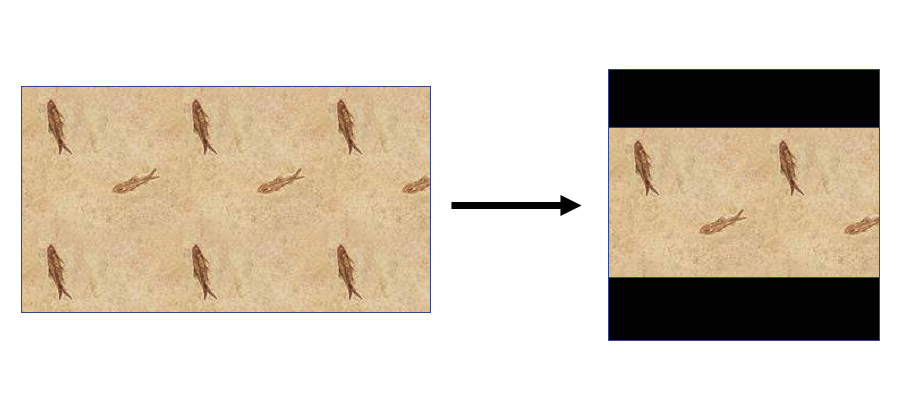

Дополнить размер изображения полями до квадрата:
from PIL import Image
def make_square(im, min_size=256, fill_color=(0, 0, 0, 0)):
x, y = im.size
size = max(min_size, x, y)
new_im = Image.new('RGBA', (size, size), fill_color)
new_im.paste(im, ((size - x) / 2, (size - y) / 2))
return new_im
test_image = Image.open(hLarp.png')
new_image = make_square(test_image)

Дополнить до квадрата с указанием максимального размера (мелкие картинки останутся мелкими, большие уменьшатся):
@staticmethod
def transparent_background_thumbnail(image, thumbnail_size=(128, 128)):
background = Image.new('RGBA', thumbnail_size, (0, 0, 0, 0))
source_image = image.convert("RGBA")
source_image.thumbnail(thumbnail_size)
(w, h) = source_image.size
background.paste(source_image, ((thumbnail_size[0] - w) // 2, (thumbnail_size[1] - h) // 2))
return background
Дополнить до квадрата с указанием фиксированного размера (мелкие картинки будут растянуты до нужного размера, большие -- сжаты):
@staticmethod
def make_square_and_resize(im, result_size=(128, 128), fill_color=(0, 0, 0, 0)):
source_im = im.convert("RGBA")
x, y = source_im.size
size = max(x, y)
new_im = Image.new('RGBA', (size, size), fill_color)
new_im.paste(source_im, ((size - x) // 2, (size - y) // 2))
new_im = new_im.resize(result_size, Image.BILINEAR)
return new_im